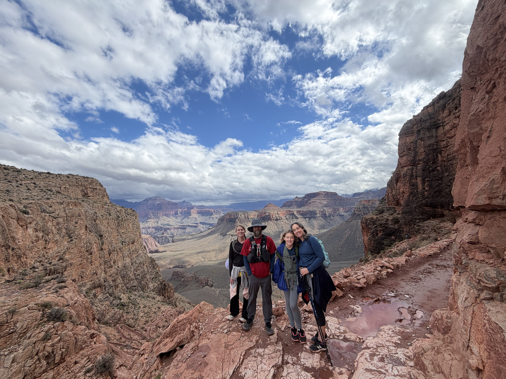
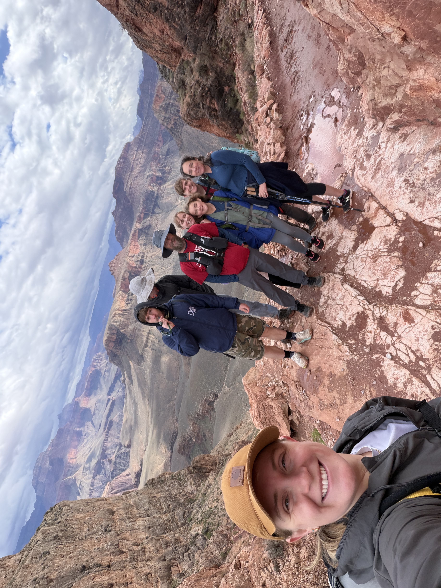
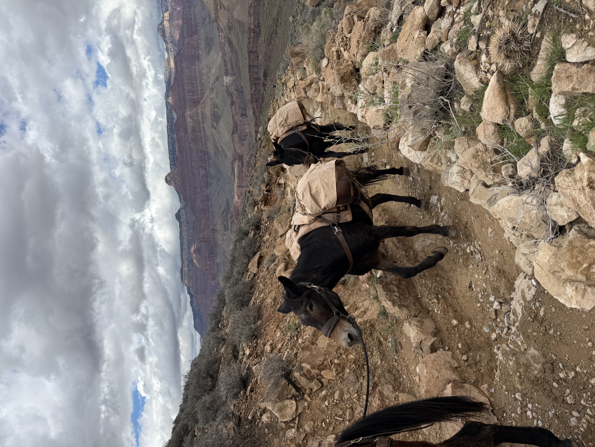
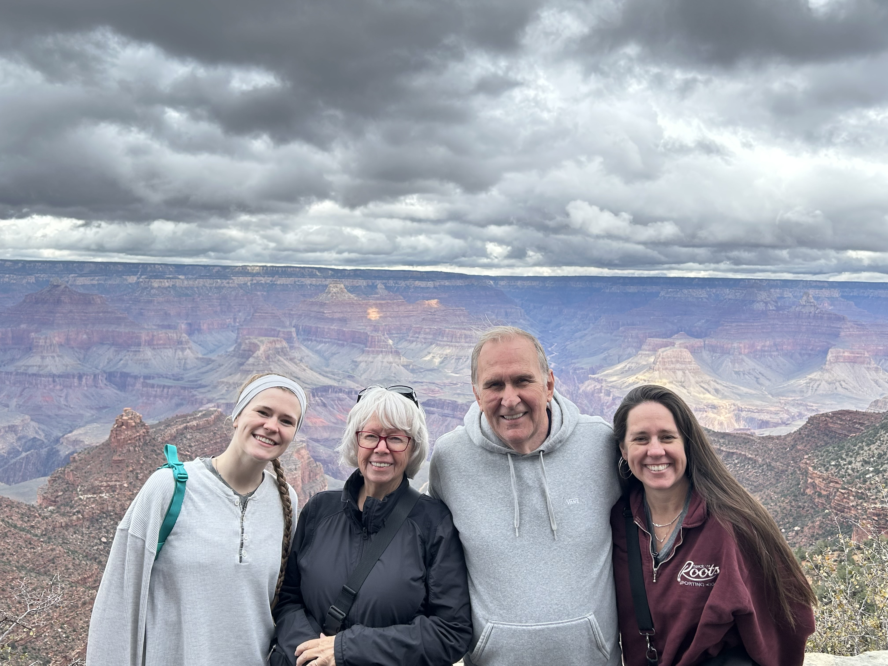
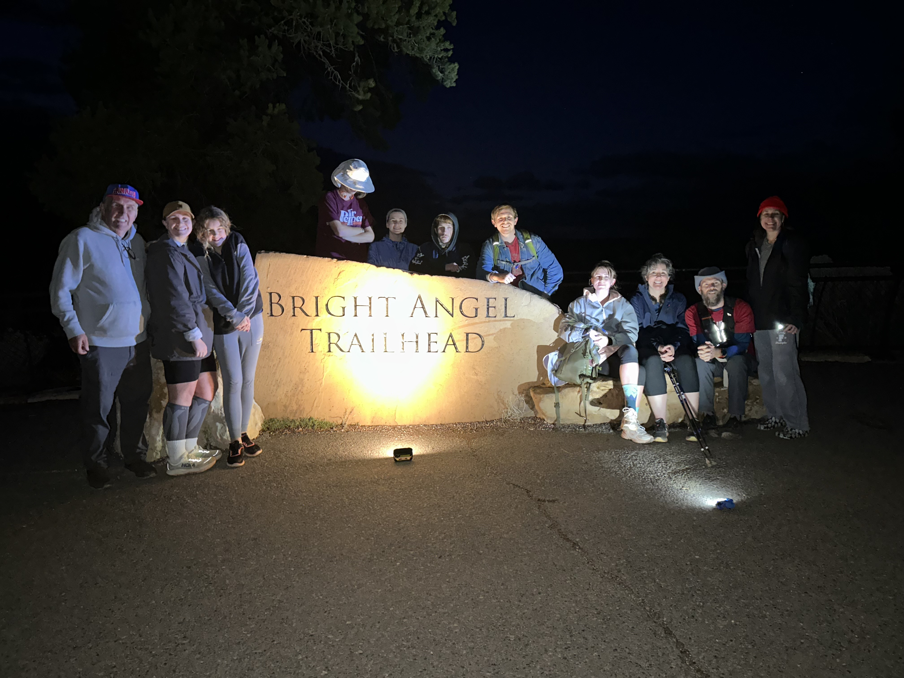

October 13th is a significant day for our family—the anniversary of Jefferson’s passing nine years ago. It feels like both yesterday and forever ago; everything in our lives is measured by before or after that day. To honor him, we hold a tradition of doing hard things during "Jeffy Week." This year, alongside Ryan’s cross-state run, twelve of us gathered to take on the Grand Canyon.
With the North Rim, Phantom Ranch, and lower Kaibab trail closed, we adjusted our route down South Kaibab, across the Tonto trail, and up Bright Angel—a grueling 14+ mile journey. We began our descent in the rain, dropping straight into the clouds and obscurity of the canyon.
Our incredible family made it all possible. Terry, Arnon, Lindsey, and Valerie served as our indispensable "Rim Angels"—watching, praying, and even lending us jackets to brave the initial cold. That left eight hikers to conquer the canyon: Ryan, Allison, Alana, Gwen, Samantha, Phil, Ezekiel, and Jackson. This is an incredibly tough hike, and while not everyone felt up to the task, we made it out. We owe the success to countless prayers, walking poles, the cool and cloudy weather, and an amazing group of hiking buddies that kept us taking just one more step.




